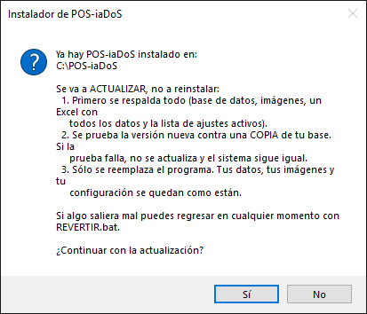
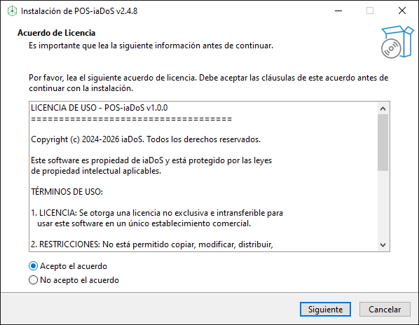
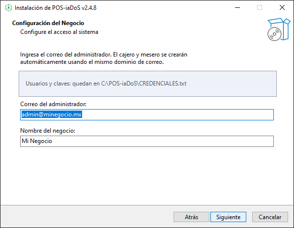
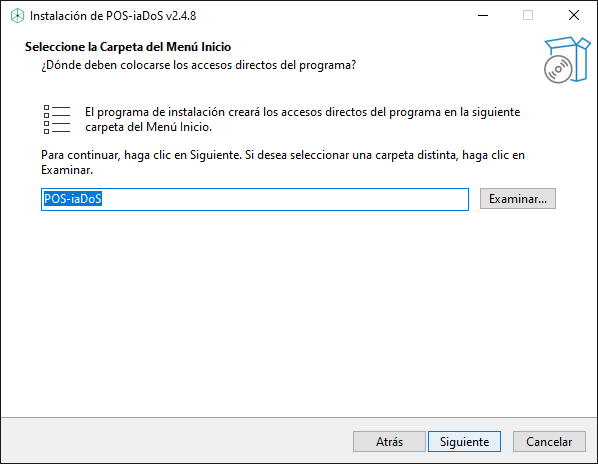
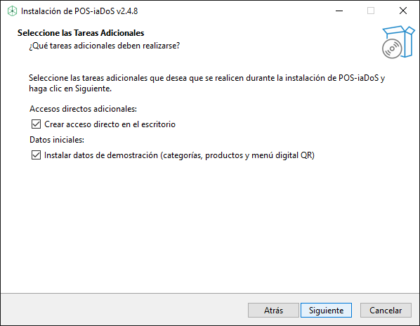
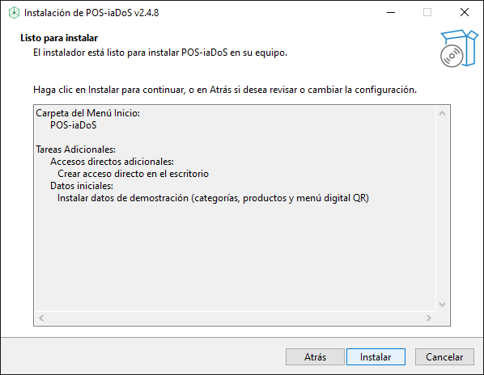
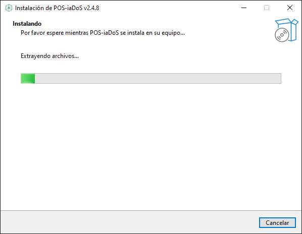
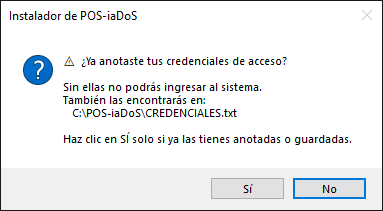
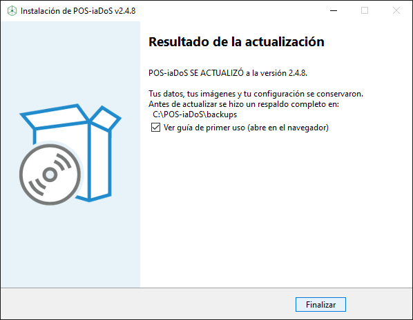
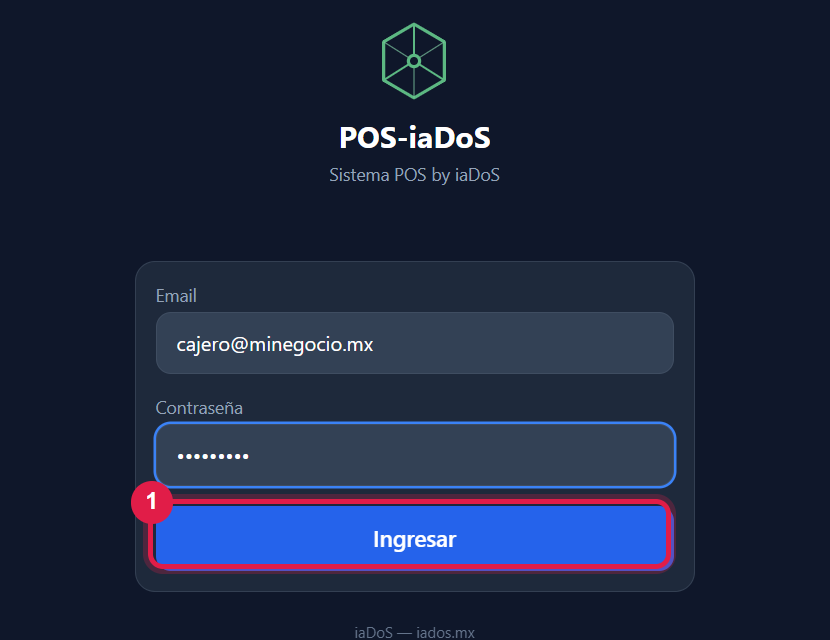

Un solo instalador para las dos cosas. No necesita internet.
La PC nunca ha tenido POS-iaDoS. Haz los pasos con número rojo y los azules.
Ya tienes POS-iaDoS. Haz los pasos con número rojo y los naranjas. No desinstales nada: tus ventas, productos e imágenes se quedan.
Clic derecho en POS-iaDoS-Local-v2.4.8.exe → Ejecutar como administrador → Sí.
Primero respalda todo y prueba la versión nueva en una copia. Si la prueba falla, no cambia nada.



C:\POS-iaDoS\CREDENCIALES.txt
Datos de demostración: quítale la palomita si es para tu negocio real (son productos de ejemplo). Al actualizar no cambia nada.


No apagues la PC ni cierres la ventana.

Te pregunta si ya anotaste tus claves. Ábrelas en C:\POS-iaDoS\CREDENCIALES.txt, guárdalas y da Sí.

Debe decir SE ACTUALIZÓ. Clic en Finalizar.


Doble clic en el ícono POS-iaDoS del escritorio, o abre http://localhost:3000 en el navegador.
Escribe tu correo y contraseña → Ingresar. Para vender, sigue el Manual de operación.
C:\POS-iaDoS\ULTIMA-ACTUALIZACION.txtREVERTIR.bat) solo si soporte te lo pide.